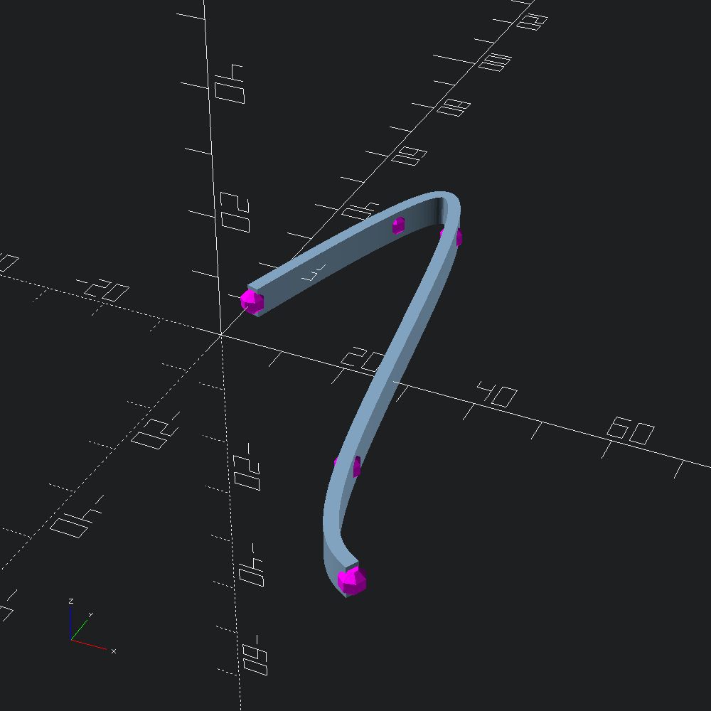

open Scad_mllet control = [ v2 0. 10.; v2 10. 40.; v2 20. 40.; v2 30. (-20.); v2 40. (-40.) ]let marks = Path2.show_points Scad.(fun _ -> color Color.Magenta @@ sphere 2.) controllet line =
let square = Poly2.square ~center:true (v2 2. 5.)
and path = Path3.of_path2 CubicSpline.(interpolate_path (fit control) 100) in
Mesh.(to_scad @@ path_extrude ~path square)Union our control point marks and line sweep shapes and output to file.
let () = Scad.to_file "spline.scad" (Scad.union [ line; marks ])